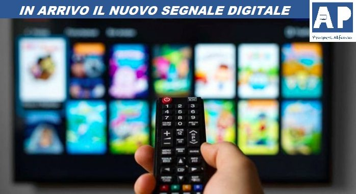

#APPROFONDIMENTI👥
⬆️📌IN ARRIVO NUOVO SEGNALE DIGITALE.
A partire da settembre 2021, molti televisori non saranno più in grado di ricevere il nuovo segnale televisivo. Cambia infatti lo standard delle trasmissioni tv e solo gli apparecchi compatibili continueranno a funzionare.
✅ Ecco come fare il test per capire se il tuo televisore supporta il nuovo formato, quando cambierà il segnale televisivo e come ottenere il bonus TV, l'incentivo statale per cambiare apparecchio.
✅ COME VERIFICARE SE LA TUA TV RICEVE IL NUOVO SEGNALE:
- Se il tuo televisore è stato acquistato dopo il 1° gennaio 2017, deve essere compatibile con il nuovo digitale terrestre perché dal 2017 i negozianti sono obbligati a vendere televisori che supportano il nuovo standard DVB-T2.
- Puoi anche accertare che la tua TV supporti il nuovo standard verificando che nel manuale e/o nella scheda tecnica del TV sia presente l’indicazione DVB-T2.
- Puoi inoltre verificare che la tua TV sia compatibile con il primo passaggio tecnologico HD, provando a vedere i canali HD, ad esempio 501 per RAIUNO HD, 505 per Canale 5 HD e 507 per LA7 HD. In particolare puoi verificare se visualizzi il canale 7 di LA7 che funzioni il canale 507 LA7 HD. Se almeno un canale HD è visibile, la TV è pronta per il primo passaggio tecnologico. Se non ne vedi nessuno, devi cambiare il tuo TV già per il primo passaggio tecnologico del 1° settembre 2021.
- Il secondo passaggio tecnologico arriverà a luglio del 2022 con il passaggio allo standard HEVC.
- Puoi verificare che la tua TV sia compatibile con il segnale HEVC Main10, provando a visualizzare i canali di test 100 e 200: se vedi RAIUNO sul canale 1 allora verifica che sul canale 100 appaia una scritta contenente le parole “Test HEVC Main10”; analogamente se vedi Canale 5 sul canale 5, verifica che sul canale 200 appaia una scritta contenente le parole “Test HEVC Main10”. Se il test è superato allora l’apparato è compatibile con il nuovo standard trasmissivo. Può essere utile rifare il test, in caso di problemi, dopo aver risintonizzato i canali.
- Se hai verificato che la TV non è compatibile con il nuovo standard trasmissivo, per continuare a vedere i tuoi programmi preferiti, dovrai acquistare una nuova TV o un decoder.
✅ DECODER O NUOVA TELEVISIONE?
- Chi possiede televisori che, ad ora, non sono in grado di ricevere i segnali trasmessi in DVB-T2 o che non riescono a decodificare lo standard H265/HEVC, sarà costretto a dover prendere un decoder per poter vedere correttamente tutti i canali oppure a cambiare televisore. I decoder sono già in vendita nei negozi di elettronica a un prezzo che va dai 30 ai 250 euro.
✅ BONUS TV / DECODER
- È stato previsto dal decreto legge del ministero dello Sviluppo Economico, un bonus fino a 50 euro che permetterà di adeguare il proprio vecchio televisore o di comprarne uno in grado di supportare il nuovo standard DVB-T2
- Lo stanziamento complessivo previsto è di circa 150 milioni di euro.
- Il “Bonus TV” è riservato alle famiglie con ISEE fino a 20 mila euro.
- il bonus viene erogato sotto forma di sconto praticato dal venditore sul prezzo del prodotto acquistato. Per ottenere lo sconto, i cittadini devono presentare al venditore una richiesta per acquistare una TV o un decoder beneficiando del bonus (vedi modulo sotto riportato). A tal fine devono dichiarare di essere residenti in Italia e di appartenere ad un nucleo familiare di fascia ISEE che non superi i 20.000 euro e che altri componenti dello stesso nucleo non abbiano già fruito del bonus.
- Per verificare che una TV o un decoder rientrino tra i prodotti per i quali è possibile usufruire del bonus è a disposizione dei cittadini una lista di prodotti “idonei”all’indirizzo https://bonustv-decoder.mise.gov.it/prodotti_idonei.
⬇️ FILE UTILI ⬇️

Se lo desideri, iscriviti ai mie canali social per restare aggiornato ⬇️
Social MediaInoltre se hai trovato utile ed interessante questo articolo, non esitare a condividerlo, a lasciare un tuo mi piace 👍, o seguire la mia pagina Facebook per sostenermi e continuare ad informare. Grazie anticipatamente a chi vorrà farlo.